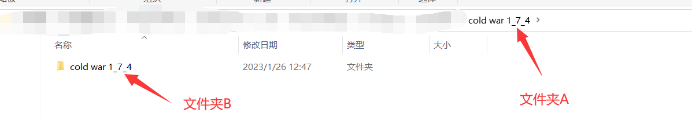
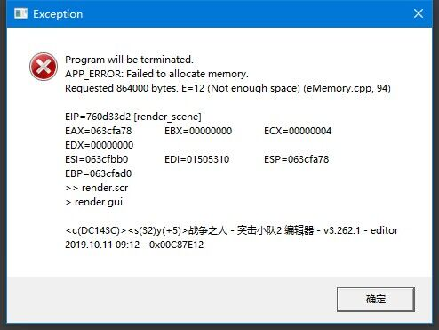
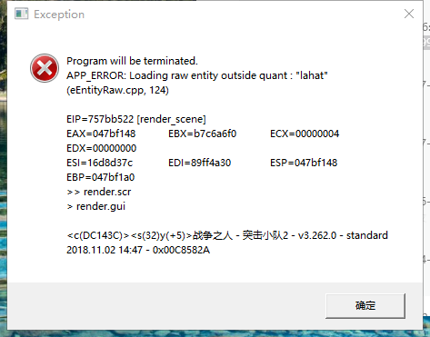
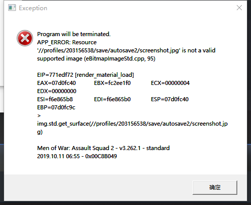

如果你有想问的，或者觉得可以在这里添加的。因为静态网站不好搞评论区，可以在b站相同专栏下回复我。
b站专栏链接：cv20004221
常见问题
基本问题
1.如何安装mod？
首先，当你拿到分享链接，如果使用百度云盘下载mod(别的链接以后再写)，那么它会是这样：

点进唯一的一个文件夹后，可以看到这里面有一大堆文件：但是对于大部分玩家，你只需要选择最新版下载，在这幅图里，也就是标注了（当前最新版）的1.74版本。别的所有内容都不需要下载！

进入1.74文件夹，可以看到三个新的文件夹，其中：
本体 =mod本身，也就是主要文件，但是mod本身是俄文的
英文包 =字面意思，就是将mod变成英文的包
修正版 =如果出现修正版，说明在版本号没有变化的情况下mod进行了热更新。所以如果有修正版，我们就下载修正版。
所以，我们下载修正版文件夹内的所有内容，和英文包(暂时，没有官方的中文包)
在下载完成后，你会得到：

我标注了一些文件，这里我们依次解释：
1.这是指向其它可以下载当前版本文件的下载地址：如果你的百度云下载速度很慢，可以尝试通过这里的链接下载。
2.这是一个自解压程序：如果你不熟悉如何使用压缩软件，那么直接双击它！
双击打开后，你会看到：

点击Extract，文件就会解压出来了！
3.这是mod压缩包的第一个分卷：如果你不想通过自解压程序解压，那么打开它，然后选择你使用的压缩软件*的解压键解压它。
这里xxx.xx.001代表它是某种格式的压缩包的第一个分卷，分卷压缩意味着压缩软件会将同一个压缩包分块，拆分成数个文件存储。所以当解压一组分卷压缩的压缩包。你必须保证所有分卷都已经下载并放在同一个文件夹内，然后右击其中一个压缩文件进行解压(而不是把每个都解压一遍！)。另外，如果你不确定你的压缩软件能否识别出这是分卷压缩，那么选择编号为001(即第一个)的分卷解压。
解压之后，你会得到一个文件夹A，这个文件夹内存放了mod相关的所有数据文件，正常来说，打开该文件夹之后它应该长这样：

如果你发现文件夹A内只有一个文件夹B，没有其他的东西，
那么你需要用这个文件夹B进行接下来的操作。否则，直接移动文件夹A。接下来将我们确定要移动的文件夹称为文件夹T(另外，除非你知道自己在做什么，不要试图直接绕过文件夹本身将文件夹内存放的数据文件移动到任何地方！)

打开游戏的根目录，然后进入名称叫mods的文件夹。
根目录，就是游戏所在的文件夹，关于该游戏相关的文件都装在这个文件夹里。对于在steam购买了该游戏的用户，它应当在xxx/steamapps/common/Men of War Assault Squad 2。
然后将文件夹T，移动到mods文件夹里。此时游戏外的安装过程就结束了。
最后，我们打开游戏：

点击箭头指向的按钮(如果你是中文，或者俄文页面，根据排列顺序点击第四个按钮，即使它不叫“options”)

点击后，我们：
1.点击mods选项卡（同样的，如果你是中文，或者俄文页面，根据排列顺序点击最后一个按钮）
2.选中名叫“cold war x_xx”的选项卡(这里用1.72版本的中文包做示例。x_xx=你下载的mod版本号)
3.点击向右的箭头(选项卡在左边意味着没有激活，在右边意味着激活)
4.点击apply（同样的，如果...，根据排列...）
如果你要加载英文包，或者中文包，或者冷战的子mod，遵循相同的4个步骤。如果你要取消加载mod，将第三步换为点击向左的箭头。
然后，你就安装成功了！congratulations)))
*如果是rar格式，最好使用winrar就行解压，它可以识别rar文件的分卷，即使随意选择分卷解压也可以正常解压出全部文件。如果是7z格式，而你的压缩软件打不开它，那么尝试下载7zip软件。
2.关于汉化/本地化/翻译问题
首先，本地化=localization，是指一种适配方式，让产品、程序或者文档，适配特定地区语言、文化和市场。
所以大致上所有的“汉化”“翻译”等说法都可以统称为本地化，我们在接下来也都这么叫
然后，冷战mod官方目前只有俄语(原生版本)，英语(英文本地化包)两种本地化版本，没有中文
但是，我已经申请了进行官方本地化，并且目前在进行中（虽然很慢）。
同时，目前完全可以使用第三方，也就是民间本地化。这些本地化链接如下：
1.百度贴吧(未登录) 具体位置579楼 作者“电疗教父杨永信”分享的版本 支持冷战1.74
2.百度贴吧(已登录) 具体位置579楼 作者“电疗教父杨永信”分享的版本 支持冷战1.74
3.创意工坊 作者“至柔”,“Dafeic”分享的版本 支持冷战1.68
4.创意工坊 作者“至柔”,“Dafeic”,“Zn”等分享的版本 支持冷战1.72~1.74(评论区找)
注：1.第一二条仅提供了pak文件，你需要直接替换英文包的同名文件，或者自己新建一个空mod放进去
2.如果你知道别的民间汉化地址，或者不希望你的成果在这里被转发，通过b站或者steam联系我，我会进行修改。
这里顺便为汉化打个广告，欢迎参与联机汉化工作或者使用我的汉化工具。目前我刚刚（2/10）初步完成了汉化工具的全部功能。
联机汉化：Paratranz!
MOW汉化工具（支持CTA以前的版本）：汉化工具(反馈bug是对我最大的支持！)
3.关于作弊
不存在官方的作弊mod！但是如果你需要可以从第三方，如mow-protal之类的地方下载到，这里提供一个链接（很多人在做作弊mod，我只是给出一个我知道的）:
mow-portal
另外，如果你真的需要作弊，没有必要使用任何作弊mod，使用游戏的编辑器，它比任何作弊mod都强大。
4.关于多人联机
你可以通过任意形式（局域网，游戏官方服务器，IP直连）和你的朋友进行联机游戏，该mod完全支持联机。
偶尔，我们在qq群里组织冷战和WZSS拓展包（一个我的冷战扩展mod）的联机游戏，如果你有兴趣打联机，欢迎加群！入群问题答冷战或者冷战拓展包均可
qq群号：607508817
或者，如果你有兴趣，且会英文或俄语中的任意一种，可以进入冷战的discord服务器，然后参加每周都会组织的官方联机游戏。
链接：discord服务器
5.关于游戏版本
目前仅支持战争之人：突击小队2，旧版本支持Call to arms和战争之人突击小队1，战争之人原版，如果需要下载这些版本，或者下载任意旧版本文件，请查找：
1.官方网站 mod版本 所有
2.mow-portal mod版本 1.6.2.2/1.67~1.74
3.百度网盘 mod版本1.69~1.74
4.moddb mod版本 1.73~1.74
注：1.在3对应的的百度物品链接中，修正版 =如果出现修正版，说明在版本号没有变化的情况下mod进行了热更新。所以如果有修正版，我们就下载修正版。类似的，在外文网站，hotfix=修正版。
6.关于更新
我可以确定的告诉你，在99%的情况下，问更新是得不到回答的，基本上不可能会有确切的新版本发布日期，原因如下：
1.mod开发组是一个松散的结构，所有成员都在用业余时间进行开发，并且随时可能退出或者暂时离开开发组，这注定了开发速度是不稳定的，并且没有任何保障。
2.确定的发布时间对mod开发本身有害，计划总是赶不上变化，结果就是往往为了赶在确定日期前发布，所有的准备工作都会进行的很仓促，最终mod会遗留下大量的bug。并且因为分发文件中的种种问题，进行临时更新来修复bug很麻烦。与其如此，不如不确定日期，而是等到我们评估认为mod已经可以推进到下个版本了，再进行更新。
不过仍然的，我们可以基于经验给出一些或多或少会有效的推测：比如CW每年往往更新1-2次，如果是整版本号(1.6.0,1.7.0)往往不会有大更新，更新周期大约在半年左右。然后通过不断关注最新消息来大致猜测下次更新还有多久到来。但是没有任何实质性的保证，我不能保证以上的任何一条推测会有效。
7.关于战争之人：突击小队2本身
如果你是第一次玩这个游戏（下简称AS2），我简单给出一些购买指南。
AS2在每次steam特卖(春季特卖,夏季特卖,圣诞节特惠.....)都打折，并且力度很大，一般都是-81%，所以没有任何必要在非打折期间买，毕竟这款游戏已经卖了10年了！没有任何必要给开发组送钱。
一般来说，建议买黄金版(gold editon)，或者如果你实在想在非打折期间买，我建议你上淘宝买key，基本上一个价（甚至更便宜）
细一点说，实际上需要购买的是游戏本体+铁拳(iron fist)DLC和空降(airbrone)DLC,但是单买dlc十分昂贵。远不如直接买黄金版，黄金版只是多了一个屁用没有的dlc，但是实际花费是变少了的。
游戏内报错问题
1.内存/显存溢出
这是最常见的问题，其发生原因主要是因为战争之人：突击小队2是一款基于32位程序的游戏，这意味着游戏本身只能读取最多4gb内存和未知大小的虚拟内存，和未知大小(可能也是4gb)的显存。一旦超越这个界限，游戏就会报错。常见的错误信息如下：
这里借用了一些别人截取的图片，不过完全没有隐私内容，我想问题不大。
1.最常见的，直接显示“申请内存失败”的英文。不用想，一定是内存溢出
2.读取实体时报错，如果复现后发现实体本身没问题，可以大概率怀疑内存溢出
3.[暂无图片]显示创建顶点缓冲失败，可以怀疑内存或显存溢出。
4.存档时报错，一般显示图片格式不合法，实际上应该是保存存档截图时内存炸了导致图片只存了一部分。
5.[暂无图片]类似2，在创建任意内容时失败，但是尝试复现发现一切正常，均可以怀疑在创建过程中内存溢出。
可能的缓解方案
因为以上指出的原因，显然这个问题不能根除，一旦加载的内容太多就会报错。但是以下列出一些方法，它们可能未经证明，但是被认为多少对缓解溢出问题有效。
1.在c盘创建一定数量的虚拟内存。
有人指出，战争之人程序似乎无法读取在别的盘符下的虚拟内存，如果你电脑上的虚拟内存没有保存在c盘，或者干脆没有设置虚拟内存，尝试该方法
2.购买一块更好的独立显卡。
已经确定的是，使用核心显卡的玩家无法游玩cw的一部分关卡，因为这些显卡的显存从内存共享，游戏被迫只能使用不到4gb的空间存储所有资源，我们确定你至少需要一块独立显卡（即使它可能只有256mb显存）才能正常游玩全部mod内容。此外，似乎具有大独立显存的玩家更不容易报错，即使与之对比的低配置玩家独立显存也超过了4gb。所以，尽可能使用一块更好的独立显卡。
3.降低游戏画质。
它听起来很有效，但是实际上效果十分不稳定。因为我们并不知道在调整画质的过程中游戏程序具体做了些什么。于是，我们给出一套可能最优的设置，以期尽可能降低配置要求。
垂直同步：关闭
抗锯齿：关闭
纹理质量：最高
阴影：关闭
纹理过滤：至少2x
模型质量：高
特效质量：低
法线贴图质量：关闭
高光贴图：关闭
环境贴图：关闭
水体质量：低
之间的所有设置全部关闭
可视距离：最高
看起来很奇怪，有一些设置被调的很高。这是基于一些假设和实践做出的改动，大致上可以认为我们尽可能的减少需要读取的资源量，但是如果我们一定要读取某部分内容，那么尽可能避免它们在游戏过程中产生非必要的，且我们不可预知的改动。（比如反复读取或从内存中擦除）因为战争之人程序的构造年代已经十分古老，它本身存在严重的内存泄漏问题(这已经被证实！一个简单的验证方法是反复加载一盘多人游戏，如果程序运行良好，它不该每次加载都多使用一些内存，但是现实是你往往在1-10次加载后内存溢出)，并且很可能采用了低效的方式来实现效果。任何变动对资源使用总量可能都是负面的。
基于版本的特定问题
1.74版本
多人游戏
1.支援卡召唤出的空载具？
首先，参见cw1.74开发日志中平衡章节的内容。然后，这些空载具的意义在于当有载具被击毁，而载具成员存活时，这些实际上高价值的单位很难再发挥它的作用。所以cw1.74在支援卡中添加了可以直接召唤的空载具，它们比召唤有人载具要便宜。于是如果你有多余的载具成员，就可以召唤这些空车使他们得以重新投入战斗。(但是如果算上需要另外召唤的载具乘员，则稍贵，这是合理的平衡方法，以阻止你尝试通过这些空载具廉价的获得进攻力量，但是同时让多余的载具成员有处可用)